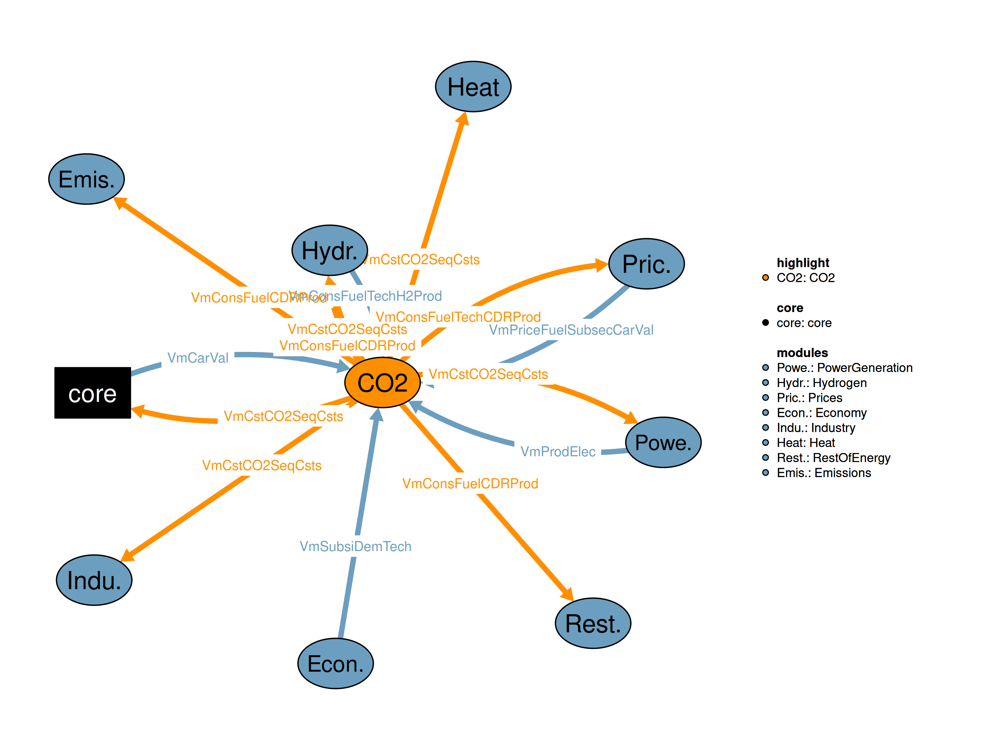

This is the CO2 module.

| Description | Unit | A | |
|---|---|---|---|
| VmCarVal (allCy, NAP, YTIME) |
Carbon prices for all countries | \(US\$2015/tn CO2\) | x |
| VmConsFuelTechH2Prod (allCy, H2TECH, EF, YTIME) |
Fuel consumption by hydrogen production technology in Mtoe | x | |
| VmPriceFuelSubsecCarVal (allCy, SBS, EF, YTIME) |
Fuel prices per subsector and fuel | \(k\$2015/toe\) | x |
| VmProdElec (allCy, PGALL, YTIME) |
Electricity production | \(TWh\) | x |
| VmSubsiDemTech (allCy, DSBS, TECH, YTIME) |
The state support per unit of new capacity in the demand subsectors and technologies for the following units: | x |
| Description | Unit | |
|---|---|---|
| VmConsFuelCDRProd (allCy, EF, YTIME) |
Annual fuel demand in DAC regionally | \(Mtoe\) |
| VmConsFuelTechCDRProd (allCy, CDRTECH, EF, YTIME) |
Annual fuel demand in each DAC technology regionally | \(Mtoe\) |
| VmCstCO2SeqCsts (allCy, YTIME) |
Cost curve for CO2 sequestration costs | \(US\$2015/tn of CO2 sequestrated\) |
This is the legacy realization of the CO2 module.
sets
$ontext
DACTECHEF(EF) "Fuels used in DAC technologies"
/
ngs
elc
/
DACTECHEFtoEF(DACTECH,EF) "Mapping between DAC technologies and fuels"
/
(HTDAC).ngs
(HTDAC,LTDAC,EWDAC).elc
/
$offtext
CO2CAPTECH "Carbon capture subsectors" /
PG
H2P
DAC
IND
/
CDR(DSBS) "CDR subsectors" /
DAC
EW
/Equations
Q06CapCO2ElecHydr(allCy,SBS,YTIME) "Compute CO2 captured by electricity and hydrogen production plants (Mtn CO2)"
Q06CaptCummCO2(allCy,YTIME) "Compute cumulative CO2 captured (Mtn of CO2)"
Q06GrossCapDAC(CDRTECH,YTIME) "Computes CAPEX of DAC technologies with learning curve"
Q06FixOandMDAC(CDRTECH,YTIME) "Computes Fixed and O&M costs of DAC technologies with learning curve"
Q06LvlCostDAC(allCy,CDRTECH,YTIME) "Calculates the CAPEX and the Fixed Costs of DAC capacity regionally (US$2015/tCO2)"
Q06VarCostDAC(CDRTECH,YTIME) "Computes variable costs of DAC technologies including carbon storage costs, with learning curve"
Q06ProfRateDAC(allCy,CDRTECH,YTIME) "Computes the annual profitability rate of DAC including the lifecycle costs and revenues regionally"
Q06CapFacNewDAC(allCy,CDRTECH,YTIME) "Computes the factor expressing the annual increase in the installed capacity of DAC regionally"
Q06CapCDR(allCy,CDRTECH,YTIME) "Computes the DAC installed capacity annually and regionally"
Q06ConsFuelTechCDRProd(allCy,CDRTECH,EF,YTIME) "Computes the annual fuel demand in each CDR technology regionally (Mtoe)"
Q06ConsFuelCDRProd(allCy,EF,YTIME) "Computes the annual fuel demand in CDR regionally (Mtoe)"Interdependent Equations
Q06CstCO2SeqCsts(allCy,YTIME) "Compute cost curve for CO2 sequestration costs"
;
Variables
V06CapCO2ElecHydr(allCy,SBS,YTIME) "CO2 captured by electricity and hydrogen production plants (Mtn CO2)"
V06CaptCummCO2(allCy,YTIME) "Cumulative CO2 captured (Mtn CO2)"
V06GrossCapDAC(CDRTECH,YTIME) "CAPEX of DAC technologies with learning curve"
V06FixOandMDAC(CDRTECH,YTIME) "Fixed and O&M costs of DAC technologies with learning curve"
V06VarCostDAC(CDRTECH,YTIME) "Variable costs of DAC technologies including carbon storage costs, with learning curve"
V06LvlCostDAC(allCy,CDRTECH,YTIME) "Regional CAPEX and the Fixed Costs of DAC capacity (US$2015/tCO2)"
V06ProfRateDAC(allCy,CDRTECH,YTIME) "The annual profitability rate of DAC including the lifecycle costs and revenues regionally"
V06CapFacNewDAC(allCy,CDRTECH,YTIME) "Factor expressing the annual increase in the installed capacity of DAC regionally"
V06CapCDR(allCy,CDRTECH,YTIME) "DAC regional installed capacity (tCO2)"Interdependent Variables
VmCstCO2SeqCsts(allCy,YTIME) "Cost curve for CO2 sequestration costs (US$2015/tn of CO2 sequestrated)"
VmConsFuelTechCDRProd(allCy,CDRTECH,EF,YTIME) "Annual fuel demand in each DAC technology regionally (Mtoe)"
VmConsFuelCDRProd(allCy,EF,YTIME) "Annual fuel demand in DAC regionally (Mtoe)"
;
Scalars
S06ProfRateMaxDAC "The maximum profitability rate of V06DACProfRate" /7.5/
S06CapFacMaxNewDAC "The maximum level of the V06DACNewCapFac" /0.115/
S06CapFacMinNewDAC "The minimum level of the V06DACNewCapFac" /0.055/
;GENERAL INFORMATION Equation format: “typical useful energy demand equation” The main explanatory variables (drivers) are activity indicators (economic activity) and corresponding energy costs. The type of “demand” is computed based on its past value, the ratio of the current and past activity indicators (with the corresponding elasticity), and the ratio of lagged energy costs (with the corresponding elasticities). This type of equation captures both short term and long term reactions to energy costs. * CO2 SEQUESTRATION COST CURVES The equation calculates the CO2 captured by electricity and hydrogen production plants in million tons of CO2 for a specific scenario and year. The CO2 capture is determined by summing the product of electricity production from plants with carbon capture and storage, the conversion factor from terawatt-hours to million tons of oil equivalent (smTWhToMtoe), the plant efficiency, the CO2 emission factor, and the plant CO2 capture rate.
Q06CapCO2ElecHydr(allCy,SBS,YTIME)$(TIME(YTIME)$(runCy(allCy)))..
V06CapCO2ElecHydr(allCy,SBS,YTIME)
=E=
sum(EFS,
sum(CCS$PGALLtoEF(CCS,EFS),
VmProdElec(allCy,CCS,YTIME) * smTWhToMtoe /
imPlantEffByType(allCy,CCS,YTIME) *
(imCo2EmiFac(allCy,SBS,EFS,YTIME) + 4.17$sameas("BMSWAS",EFS))*
V04CO2CaptRate(allCy,CCS,YTIME)
)$sameas("PG", SBS) +
sum(H2TECH$H2TECHEFtoEF(H2TECH,EFS),
VmConsFuelTechH2Prod(allCy,H2TECH,EFS,YTIME) *
(imCo2EmiFac(allCy,SBS,EFS,YTIME) + 4.17$sameas("BMSWAS",EFS))*
V05CaptRateH2(allCy,H2TECH,YTIME)
)$sameas("H2P", SBS)
) +
sum(DACTECH,V06CapCDR(allCy,DACTECH,YTIME) * 1e-6)$sameas("DAC", SBS) +
(V06CapCDR(allCy,"TEW",YTIME) * 1e-6)$sameas("EW", SBS) +
sum(DSBS$sameas(DSBS,SBS),
sum(CCSTECH$SECTTECH(DSBS,CCSTECH),
sum(EFS$ITECHtoEF(CCSTECH,EFS),
i02ShareBlend(allCy,DSBS,CCSTECH,EFS,YTIME) *
V02EquipCapTechSubsec(allcy,DSBS,CCSTECH,YTIME) *
i02util(allCy,DSBS,CCSTECH,YTIME) *
imCO2CaptRateIndustry(allCy,CCSTECH,YTIME) *
(imCo2EmiFac(allCy,DSBS,EFS,YTIME) + 4.17$sameas("BMSWAS",EFS))
)
)
)$INDSE1(SBS); The equation calculates the cumulative CO2 captured in million tons of CO2 for a given scenario and year. The cumulative CO2 captured at the current time period is determined by adding the CO2 captured by electricity and hydrogen production plants to the cumulative CO2 captured in the previous time period. This equation captures the ongoing total CO2 capture over time in the specified scenario.
Q06CaptCummCO2(allCy,YTIME)$(TIME(YTIME)$(runCy(allCy)))..
V06CaptCummCO2(allCy,YTIME)
=E=
V06CaptCummCO2(allCy,YTIME-1) +
SUM(SBS$(not sameas("EW",SBS)),V06CapCO2ElecHydr(allCy,SBS,YTIME)); The equation calculates the cost curve for CO2 sequestration costs in Euro per ton of CO2 sequestered for a specific scenario and year. The cost curve is determined based on cumulative CO2 captured and elasticities for the CO2 sequestration cost curve.The equation is formulated to represent a flexible cost curve that can transition from linear to exponential. The transition is controlled by the weight for the transition from linear to exponential The cost curve is expressed as a combination of linear and exponential functions, allowing for a realistic. representation of the relationship between cumulative CO2 captured and sequestration costs. This equation provides a dynamic and realistic approach to modeling CO2 sequestration costs, considering the cumulative CO2 captured and the associated elasticities for the cost curve. The result represents the cost of sequestering one ton of CO2 in the specified scenario and year.
Q06CstCO2SeqCsts(allCy,YTIME)$(TIME(YTIME)$(runCy(allCy)))..
VmCstCO2SeqCsts(allCy,YTIME)
=E=
!! linear component
0.6 *
i06ElastCO2Seq(allCy,"mc_b") +
!! exponential component
(1-0.6) *
i06ElastCO2Seq(allCy,"mc_b") *
exp(V06CaptCummCO2(allCy,YTIME) / i06ElastCO2Seq(allCy,"mc_d")); The equation calculates the CAPEX of each DAC technology, as it’s
affected by a learning curve (\(/tCO2).
```
Q06GrossCapDAC(CDRTECH,YTIME)\)(TIME(YTIME))..
V06GrossCapDAC(CDRTECH,YTIME) =E=
0.5 * ( (i06GrossCapDAC(CDRTECH) * (sum(allCy\(runCyL(allCy),V06CapCDR(allCy,CDRTECH,YTIME-1)))
** (log(0.97)/log(2))) +
i06GrossCapDACMin(CDRTECH) +
sqrt(
sqr(
(i06GrossCapDAC(CDRTECH) *
(sum(allCy\)runCyL(allCy),V06CapCDR(allCy,CDRTECH,YTIME-1))) **
(log(0.97)/log(2))) - i06GrossCapDACMin(CDRTECH) ) ) );
The equation calculates the fixed and O&M costs of each DAC technology, as they are affected by a learning curve.Q06FixOandMDAC(CDRTECH,YTIME)\((TIME(YTIME))..
V06FixOandMDAC(CDRTECH,YTIME)
=E=
0.5 *
(
(i06FixOandMDAC(CDRTECH) *
(sum(allCy\)runCyL(allCy),V06CapCDR(allCy,CDRTECH,YTIME-1))) **
(log(0.97)/log(2))) + i06FixOandMDACMin(CDRTECH) + sqrt( sqr(
(i06FixOandMDAC(CDRTECH) * (sum(allCy\(runCyL(allCy),V06CapCDR(allCy,CDRTECH,YTIME-1)))
** (log(0.97)/log(2))) -
i06FixOandMDACMin(CDRTECH)
)
)
)
;
```
The equation calculates the variable costs of each DAC technology
including the CO2 storage costs, as they are affected by a learning
curve.
```
Q06VarCostDAC(CDRTECH,YTIME)\)(TIME(YTIME))..
V06VarCostDAC(CDRTECH,YTIME) =E=
0.5 * ( (i06VarCostDAC(CDRTECH) * (sum(allCy\(runCyL(allCy),V06CapCDR(allCy,CDRTECH,YTIME-1)))
** (log(0.97)/log(2))) +
i06VarCostDACMin(CDRTECH) +
sqrt(
sqr(
(i06VarCostDAC(CDRTECH) *
(sum(allCy\)runCyL(allCy),V06CapCDR(allCy,CDRTECH,YTIME-1))) **
(log(0.97)/log(2))) - i06VarCostDACMin(CDRTECH) ) ) ) ;
The equation calculates the Levelized Costs of DAC capacity, also taking into account its discount rate and life expectancy,
for each region (country) and year.Q06LvlCostDAC(allCy,CDRTECH,YTIME)\((TIME(YTIME)\)(runCy(allCy)))..
V06LvlCostDAC(allCy,CDRTECH,YTIME) =E=
V06GrossCapDAC(CDRTECH,YTIME) -
VmSubsiDemTech(allCy,“DAC”,CDRTECH,YTIME)\(DACTECH(CDRTECH) -
VmSubsiDemTech(allCy,"EW",CDRTECH,YTIME)\)sameas(“TEW”,CDRTECH)
+ V06FixOandMDAC(CDRTECH,YTIME) + V06VarCostDAC(CDRTECH,YTIME) - 20 +
i06SpecElecDAC(allCy,CDRTECH,YTIME) *
VmPriceFuelSubsecCarVal(allCy,“OI”,“ELC”,YTIME) +
i06SpecHeatDAC(allCy,CDRTECH,YTIME) *
VmPriceFuelSubsecCarVal(allCy,“OI”,“NGS”,YTIME) / 0.85 +
VmCstCO2SeqCsts(allCy,YTIME) ;
The equation estimates the profitability of DAC capacity, calculating the rate between levelized costs (CAPEX, fixed and fuel needs)
and revenues/avoided costs (carbon values, carbon subsidies) regionally.Q06ProfRateDAC(allCy,CDRTECH,YTIME)\((TIME(YTIME)\)(runCy(allCy))).. V06ProfRateDAC(allCy,CDRTECH,YTIME) =E= (sum(NAP\(NAPtoALLSBS(NAP,"DAC"),VmCarVal(allCy,NAP,YTIME))) / V06LvlCostDAC(allCy,CDRTECH,YTIME - 1) ; ``` The equation estimates the annual increase rate of DAC capacity regionally, according to the maturity and profitability of each technology. ``` Q06CapFacNewDAC(allCy,CDRTECH,YTIME)\)(TIME(YTIME)\((runCy(allCy))).. V06CapFacNewDAC(allCy,CDRTECH,YTIME) =E= exp(i06MatFacDAC(CDRTECH) * V06ProfRateDAC(allCy,CDRTECH,YTIME) - 1) / exp(i06MatFacDAC(CDRTECH) * S06ProfRateMaxDAC - 1) * (S06CapFacMaxNewDAC - S06CapFacMinNewDAC) + S06CapFacMinNewDAC; ``` The equation calculates the DAC installed capacity annually and regionally, adding capacity based on the maturity of the technology, as well as given capacities of actual scheduled DAC units. ``` Q06CapCDR(allCy,CDRTECH,YTIME)\)(TIME(YTIME)\((runCy(allCy))).. V06CapCDR(allCy,CDRTECH,YTIME) =E= V06CapCDR(allCy,CDRTECH,YTIME-1) * (1 + V06CapFacNewDAC(allCy,CDRTECH,YTIME)) + i06SchedNewCapDAC(allCy,CDRTECH,YTIME); ``` The equation calculates the different fuels consumed by the DAC installed capacity annually and regionally. ``` Q06ConsFuelTechCDRProd(allCy,CDRTECH,EF,YTIME)\)(TIME(YTIME) $TECHtoEF(CDRTECH,EF) \((runCy(allCy))).. VmConsFuelTechCDRProd(allCy,CDRTECH,EF,YTIME) =E= ( (V06CapCDR(allCy,CDRTECH,YTIME) * i06SpecHeatDAC(allCy,CDRTECH,YTIME) / 0.85)\)(sameas(EF, ‘ngs’)) + (V06CapCDR(allCy,CDRTECH,YTIME) * i06SpecHeatDAC(allCy,CDRTECH,YTIME) / 0.85)\((sameas(EF, 'H2F')) + (V06CapCDR(allCy,CDRTECH,YTIME) * i06SpecElecDAC(allCy,CDRTECH,YTIME))\)(sameas(EF, ‘elc’)) ) / 1e6;
The equation calculates the different fuels consumed by the DAC installed capacity annually and regionally.Q06ConsFuelCDRProd(allCy,EF,YTIME)$(TIME(YTIME) \((runCy(allCy))).. VmConsFuelCDRProd(allCy,EF,YTIME) =E= sum(CDRTECH\)TECHtoEF(CDRTECH,EF),VmConsFuelTechCDRProd(allCy,CDRTECH,EF,YTIME));
parameter i06CO2SeqData(CO2SEQELAST) “Data for CO2 sequestration (1)” / POT 9175, mc_a 0, mc_b 20, mc_c 0.02, mc_d 5e3, mc_s 120, mc_m 1.013 / ; parameter i06MatFacDAC(CDRTECH) “Maturity factor of DAC technology expressing its elasticity in implementation regarding its financial sustainability” / HTDAC 0.80, H2DAC 0.27, LTDAC 0.13, TEW 0.35 / ; parameter i06CapexDAC(CDRTECH) “CAPEX of each DAC technology (\(/tCO2)" / HTDAC 250, H2DAC 1300 LTDAC 1300, TEW 400 / ; parameter i06CapexDACMin(CDRTECH) "Minimum possible CAPEX of each DAC technology affected by learning curve (\)/tCO2)” / HTDAC 120, H2DAC 68, LTDAC 68, TEW 68 / ; parameter i06FixCostDAC(CDRTECH) “Fixed and O&M costs of each DAC technology (\(/tCO2)" / HTDAC 72, H2DAC 80, LTDAC 180, TEW 600 / ; parameter i06FixCostDACMin(CDRTECH) "Minimum possible Fixed and O&M costs of each DAC technology affected by learning curve (\)/tCO2)” / HTDAC 40, H2DAC 40, LTDAC 30, TEW 30 / ; parameter i06VarDACMin(CDRTECH) “Minimum possible Variable and carbon storage costs of each DAC technology affected by learning curve (\(/tCO2)" / HTDAC 75, H2DAC 94, LTDAC 250, TEW 130 / ; parameter i06VarDAC(CDRTECH) "Variable and carbon storage costs of each DAC technology (\)/tCO2)” / HTDAC 90, H2DAC 115, LTDAC 306, TEW 200 / ; parameter i06SubsiDAC(CDRTECH) “Subsidy factor applied to the carbon price” / HTDAC 1, H2DAC 1.8, LTDAC 1.8, TEW 1.8 / ; parameter i06LftExpDAC(CDRTECH) “Lifetime of each DAC technology (years)” / HTDAC 25, H2DAC 25, LTDAC 20, TEW 15 / ; parameter i06ElNeedsDAC(CDRTECH) “Specific electricity needs of DAC technologies (toe/tCO2)” / HTDAC 0.12658832, H2DAC 0.12658832, LTDAC 0.0236457, TEW 3 / ; parameter i06HeatNeedsDAC(CDRTECH) “Specific heat needs of DAC technologies (toe/tCO2)” / HTDAC 1.265883, H2DAC 1.265883, LTDAC 0, TEW 0 / ; parameter i06SchedNewCapDAC(allCy,CDRTECH,YTIME) “Scheduled new DAC capacity” / NEU.LTDAC.2027 4e4, !!Removr – Mongstad pilot / industrial‑scale projects NEU.LTDAC.2026 4e4, !!Orca (Climeworks + Carbfix) + Mammoth (Climeworks + Carbfix) NEU.LTDAC.2028 1e5, !!Removr + Carbfix (Large‑Scale Plant) NEU.LTDAC.2024 900, !!Climeworks – Hinwil pilot, Switzerland USA.LTDAC.2023 1e3, !!Global Thermostat – Commerce City, Colorado USA.HTDAC.2024 1e3, !!Heirloom – Tracy, California USA.LTDAC.2025 5e3, !!Heimdal – Bantam, Oklahoma USA.LTDAC.2026 5e5, !!Stratos (1PointFive / Occidental) — Texas USA.HTDAC.2027 5e5, !!Project Cypress (Climeworks + Heirloom + Battelle) — Louisiana USA.LTDAC.2027 5e5, !!Project Cypress (Climeworks + Heirloom + Battelle) — Louisiana USA.LTDAC.2032 1e6, !!HIF USA eFuels – Matagorda County, Texas USA.LTDAC.2034 5e5, !!Project Bison – Wyoming (CarbonCapture Inc.) USA.LTDAC.2035 7e5 !!South Texas DAC Hub \(ifthen.DACproj %fScenario% == 2 CHA.LTDAC.2026 1e6, !!Possible CHA.H2DAC.2030 1e5, !!Possible CHA.TEW.2030 1e6, !!Possible OAS.LTDAC.2030 1e6, !!Possible OAS.TEW.2035 1e5, !!Possible DEU.LTDAC.2035 4e5, !!Possible DEU.TEW.2035 2e5, !!Possible FRA.LTDAC.2035 2e5, !!Possible GBR.H2DAC.2035 5e4, !!Possible IND.LTDAC.2026 7e5, !!Possible IND.TEW.2030 7e5, !!Possible JPN.H2DAC.2030 1e5, !!Possible REF.LTDAC.2029 5e5, !!Possible REF.TEW.2033 1e5, !!Possible MEA.LTDAC.2031 1e5, !!Possible MEA.TEW.2037 5e5, !!Possible SSA.LTDAC.2032 1e6, !!Possible SSA.TEW.2037 1e5, !!Possible LAM.TEW.2024 5e5/;\)else.DACproj /; \(endIf.DACproj Parameters i06ElastCO2Seq(allCy,CO2SEQELAST) "Elasticities for CO2 sequestration cost curve (1)" i06GrossCapDACMin(CDRTECH) "Minimum possible CAPEX of each DAC technology affected by learning curve (\)/tCO2)” i06GrossCapDAC(CDRTECH) “CAPEX of each DAC technology (\(/tCO2)" i06VarCostDAC(CDRTECH) "Variable and carbon storage costs of each DAC technology (\)/tCO2)” i06VarCostDACMin(CDRTECH) “Minimum possible Variable and carbon storage costs of each DAC technology affected by learning curve (\(/tCO2)" i06FixOandMDAC(CDRTECH) "Fixed and O&M costs of each DAC technology (\)/tCO2)” i06FixOandMDACMin(CDRTECH) “Minimum possible Fixed and O&M costs of each DAC technology affected by learning curve ($/tCO2)” i06LftDAC(allCy,CDRTECH,YTIME) “Lifetime of each DAC technology (years)” i06SubsiFacDAC(CDRTECH) “State subsidy factor for the carbon captured applied on the carbon price” i06SpecElecDAC(allCy,CDRTECH,YTIME) “Specific electricity needs of DAC technologies (MWh/tCO2)” i06SpecHeatDAC(allCy,CDRTECH,YTIME) “Specific heat needs of DAC technologies (MWh/tCO2)” ; i06ElastCO2Seq(runCy,CO2SEQELAST) = i06CO2SeqData(CO2SEQELAST); i06GrossCapDACMin(CDRTECH) = i06CapexDACMin(CDRTECH); i06GrossCapDAC(CDRTECH) = i06CapexDAC(CDRTECH); i06VarCostDAC(CDRTECH) = i06VarDAC(CDRTECH); i06VarCostDACMin(CDRTECH) = i06VarDACMin(CDRTECH); i06FixOandMDACMin(CDRTECH) = i06FixCostDACMin(CDRTECH); i06FixOandMDAC(CDRTECH) = i06FixCostDAC(CDRTECH); i06SubsiFacDAC(CDRTECH) = i06SubsiDAC(CDRTECH); i06LftDAC(runCy,CDRTECH,YTIME) = i06LftExpDAC(CDRTECH); i06SpecElecDAC(runCy,CDRTECH,YTIME) = i06ElNeedsDAC(CDRTECH); i06SpecHeatDAC(runCy,CDRTECH,YTIME) = i06HeatNeedsDAC(CDRTECH);
*VARIABLE INITIALISATION*V06CapCO2ElecHydr.FX(runCy,SBS,YTIME)\(DATAY(YTIME) = 0; V06CaptCummCO2.LO(runCy,YTIME) = 0; V06CaptCummCO2.L(runCy,YTIME) = 1; V06CaptCummCO2.FX(runCy,YTIME)\)DATAY(YTIME) = 0 ; V06LvlCostDAC.LO(runCy,CDRTECH,YTIME) = epsilon6; V06LvlCostDAC.L(runCy,CDRTECH,YTIME) = 100; V06LvlCostDAC.FX(runCy,CDRTECH,YTIME)\(DATAY(YTIME) = 100; V06CapCDR.FX(runCy,CDRTECH,YTIME)\)DATAY(YTIME) = 1; V06ProfRateDAC.LO(runCy,CDRTECH,YTIME) = 0; V06ProfRateDAC.L(runCy,CDRTECH,YTIME) = 1; V06CapFacNewDAC.FX(runCy,CDRTECH,YTIME)$DATAY(YTIME) = S06CapFacMinNewDAC; ```
Limitations There are no known limitations.
| Description | Unit | A | |
|---|---|---|---|
| i06CapexDAC (CDRTECH) |
CAPEX of each DAC technology | \(\$/tCO2\) | x |
| i06CapexDACMin (CDRTECH) |
Minimum possible CAPEX of each DAC technology affected by learning curve | \(\$/tCO2\) | x |
| i06CO2SeqData (CO2SEQELAST) |
Data for CO2 sequestration | \(1\) | x |
| i06ElastCO2Seq (allCy, CO2SEQELAST) |
Elasticities for CO2 sequestration cost curve | \(1\) | x |
| i06ElNeedsDAC (CDRTECH) |
Specific electricity needs of DAC technologies | \(toe/tCO2\) | x |
| i06FixCostDAC (CDRTECH) |
Fixed and O&M costs of each DAC technology | \(\$/tCO2\) | x |
| i06FixCostDACMin (CDRTECH) |
Minimum possible Fixed and O&M costs of each DAC technology affected by learning curve | \(\$/tCO2\) | x |
| i06FixOandMDAC (CDRTECH) |
Fixed and O&M costs of each DAC technology | \(\$/tCO2\) | x |
| i06FixOandMDACMin (CDRTECH) |
Minimum possible Fixed and O&M costs of each DAC technology affected by learning curve | \(\$/tCO2\) | x |
| i06GrossCapDAC (CDRTECH) |
CAPEX of each DAC technology | \(\$/tCO2\) | x |
| i06GrossCapDACMin (CDRTECH) |
Minimum possible CAPEX of each DAC technology affected by learning curve | \(\$/tCO2\) | x |
| i06HeatNeedsDAC (CDRTECH) |
Specific heat needs of DAC technologies | \(toe/tCO2\) | x |
| i06LftDAC (allCy, CDRTECH, YTIME) |
Lifetime of each DAC technology | \(years\) | x |
| i06LftExpDAC (CDRTECH) |
Lifetime of each DAC technology | \(years\) | x |
| i06MatFacDAC (CDRTECH) |
Maturity factor of DAC technology expressing its elasticity in implementation regarding its financial sustainability | x | |
| i06SchedNewCapDAC (allCy, CDRTECH, YTIME) |
Scheduled new DAC capacity | x | |
| i06SpecElecDAC (allCy, CDRTECH, YTIME) |
Specific electricity needs of DAC technologies | \(MWh/tCO2\) | x |
| i06SpecHeatDAC (allCy, CDRTECH, YTIME) |
Specific heat needs of DAC technologies | \(MWh/tCO2\) | x |
| i06SubsiDAC (CDRTECH) |
Subsidy factor applied to the carbon price | x | |
| i06SubsiFacDAC (CDRTECH) |
State subsidy factor for the carbon captured applied on the carbon price | x | |
| i06VarCostDAC (CDRTECH) |
Variable and carbon storage costs of each DAC technology | \(\$/tCO2\) | x |
| i06VarCostDACMin (CDRTECH) |
Minimum possible Variable and carbon storage costs of each DAC technology affected by learning curve | \(\$/tCO2\) | x |
| i06VarDAC (CDRTECH) |
Variable and carbon storage costs of each DAC technology | \(\$/tCO2\) | x |
| i06VarDACMin (CDRTECH) |
Minimum possible Variable and carbon storage costs of each DAC technology affected by learning curve | \(\$/tCO2\) | x |
| Q06CapCDR (allCy, CDRTECH, YTIME) |
Computes the DAC installed capacity annually and regionally | x | |
| Q06CapCO2ElecHydr (allCy, SBS, YTIME) |
Compute CO2 captured by electricity and hydrogen production plants | \(Mtn CO2\) | x |
| Q06CapFacNewDAC (allCy, CDRTECH, YTIME) |
Computes the factor expressing the annual increase in the installed capacity of DAC regionally | x | |
| Q06CaptCummCO2 (allCy, YTIME) |
Compute cumulative CO2 captured | \(Mtn of CO2\) | x |
| Q06ConsFuelCDRProd (allCy, EF, YTIME) |
Computes the annual fuel demand in CDR regionally | \(Mtoe\) | x |
| Q06ConsFuelTechCDRProd (allCy, CDRTECH, EF, YTIME) |
Computes the annual fuel demand in each CDR technology regionally | \(Mtoe\) | x |
| Q06CstCO2SeqCsts (allCy, YTIME) |
Compute cost curve for CO2 sequestration costs | x | |
| Q06FixOandMDAC (CDRTECH, YTIME) |
Computes Fixed and O&M costs of DAC technologies with learning curve | x | |
| Q06GrossCapDAC (CDRTECH, YTIME) |
Computes CAPEX of DAC technologies with learning curve | x | |
| Q06LvlCostDAC (allCy, CDRTECH, YTIME) |
Calculates the CAPEX and the Fixed Costs of DAC capacity regionally | \(US\$2015/tCO2\) | x |
| Q06ProfRateDAC (allCy, CDRTECH, YTIME) |
Computes the annual profitability rate of DAC including the lifecycle costs and revenues regionally | x | |
| Q06VarCostDAC (CDRTECH, YTIME) |
Computes variable costs of DAC technologies including carbon storage costs, with learning curve | x | |
| S06CapFacMaxNewDAC | The maximum level of the V06DACNewCapFac | x | |
| S06CapFacMinNewDAC | The minimum level of the V06DACNewCapFac | x | |
| S06ProfRateMaxDAC | The maximum profitability rate of V06DACProfRate | x | |
| V06CapCDR (allCy, CDRTECH, YTIME) |
DAC regional installed capacity | \(tCO2\) | x |
| V06CapCO2ElecHydr (allCy, SBS, YTIME) |
CO2 captured by electricity and hydrogen production plants | \(Mtn CO2\) | x |
| V06CapFacNewDAC (allCy, CDRTECH, YTIME) |
Factor expressing the annual increase in the installed capacity of DAC regionally | x | |
| V06CaptCummCO2 (allCy, YTIME) |
Cumulative CO2 captured | \(Mtn CO2\) | x |
| V06FixOandMDAC (CDRTECH, YTIME) |
Fixed and O&M costs of DAC technologies with learning curve | x | |
| V06GrossCapDAC (CDRTECH, YTIME) |
CAPEX of DAC technologies with learning curve | x | |
| V06LvlCostDAC (allCy, CDRTECH, YTIME) |
Regional CAPEX and the Fixed Costs of DAC capacity | \(US\$2015/tCO2\) | x |
| V06ProfRateDAC (allCy, CDRTECH, YTIME) |
The annual profitability rate of DAC including the lifecycle costs and revenues regionally | x | |
| V06VarCostDAC (CDRTECH, YTIME) |
Variable costs of DAC technologies including carbon storage costs, with learning curve | x |
| description | |
|---|---|
| allCy | All Countries Used in the Model |
| CCS(PGALL) | Plants which can be equipped with CCS |
| CCSTECH(ITECH) | |
| CDR(DSBS) | CDR subsectors |
| CDRTECH(TECH) | CDR Technologies |
| CO2CAPTECH | Carbon capture subsectors |
| CO2SEQELAST | Elasticities for CO2 sequestration cost curve |
| DACTECH(CDRTECH) | DAC Technologies |
| DSBS(SBS) | All Demand Subsectors |
| EF | Energy Forms |
| EFS(EF) | Energy Forms used in Supply Side |
| H2TECH(STECH) | Hydrogen production technologies |
| H2TECHEFtoEF(H2TECH, EF) | Mapping between production technologies and fuels |
| INDSE1(SBS) | Industrial SubSectors |
| ITECH(TECH) | Industrial - Domestic - Non-energy & Bunkers Technologies |
| ITECHtoEF(ITECH, EF) | Fuels consumed by industrial technologies |
| NAP(Policies_set) | National Allocation Plan sector categories |
| NAPtoALLSBS(NAP, ALLSBS) | Energy sectors corresponding to NAP sectors |
| PGALL(STECH) | Power Generation Plant Types |
| PGALLtoEF(PGALL, EFS) | Correspondence between plants and energy forms |
| runCy(allCy) | Countries for which the model is running |
| runCyL(allCy) | Countries for which the model is running (used in countries loop) |
| SBS(ALLSBS) | Model Subsectors |
| SECTTECH(DSBS, TECH) | Link between Model Demand Subsectors and Technologies |
| TECH | Technologies (in Demand side) |
| TECHtoEF | (TECHEF) Fuels consumed by technologies |
02_Industry, 03_RestOfEnergy, 04_PowerGeneration, 05_Hydrogen, 07_Emissions, 08_Prices, 09_Heat, 11_Economy, core